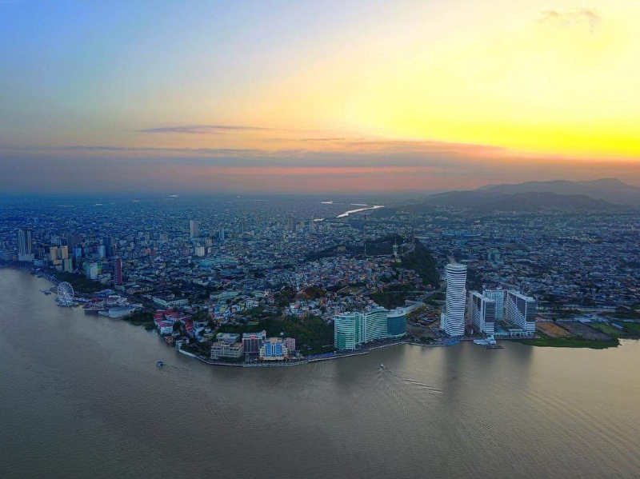

Also known as "La Perla del Pacífico" (The Pearl of the Pacific), Guayaquil is the most populous city in Ecuador, a South American country. Its rich history and vibrant cultural scene make this a must-visit destination for any adventurous traveler.
With its warm, humid climate and welcoming people, this city captivated me from the very beginning. Ecuadorian coastal cuisine is truly a hidden gem that surely leaves visitors eager to return for more.
